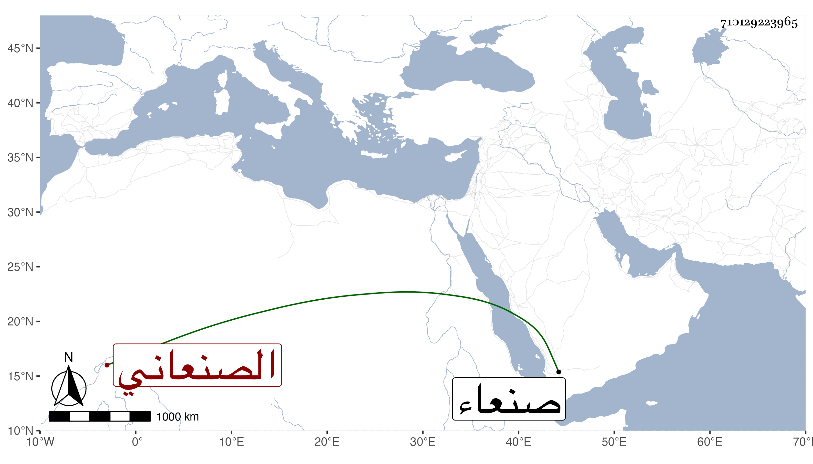

0902Sakhawi.DawLamic.ITO20230111-ara1.EIS1600.710129223965
Biography ID: 710129223965
إبراهيم بن محمد بن عبد الله الهادي الصنعاني الآتي أبوه وابنه علي . كهل فاضل من أدباء صنعاء الموجودين بها بعد السبعين وثمانمائة أنشدني ولده المشار إليه عنه من قوله في أبيات :
| ولا صدعني ماجد ذو حفيظة | ولا هجرتني زينب وسعاد |
| ولكن شعري مثل ما قال شاعر | حكيم زهير دونه وزياد |
| إذا نكرتني بلدة أو نكرتها | خرجت مع البازي على سواد |
| أبت لي نفس حرة أن أهينها | وقد شرفتها طيبة ومعاد |
| فليست على خسف تقيم ببلدة | ولا بزمام الاحتقار تقاد |
